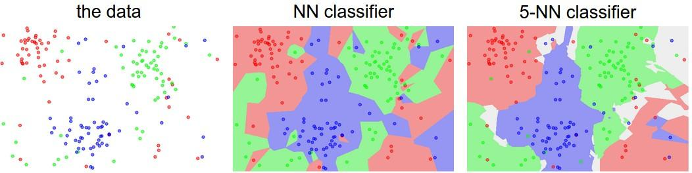
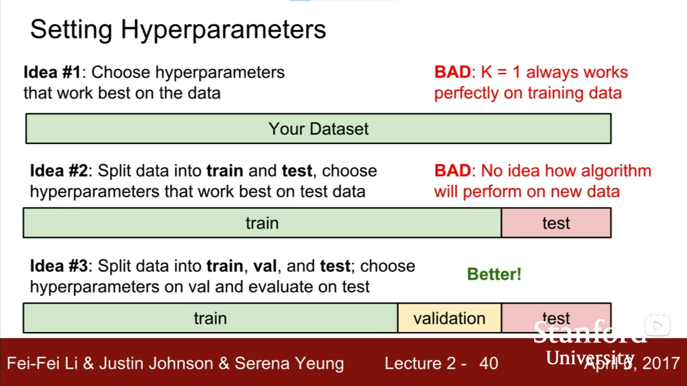
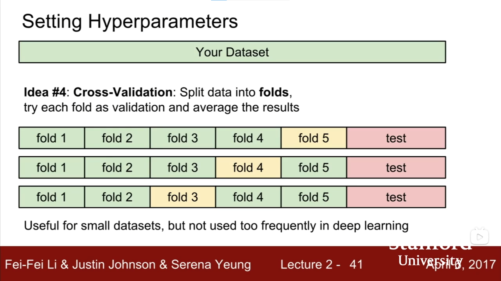
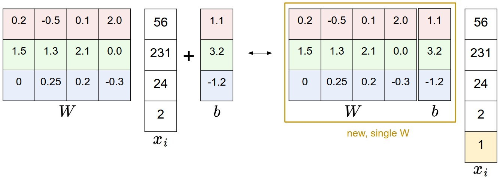

「CS231n Course 1」图像分类
Part 0 前言
CS231n全称为CS231n: Convolutional Neural Networks for Visual Recognition（2023学年），即《视觉识别的卷积神经网络》，广受欢迎和好评，是面向计算机视觉的深度学习课程，节奏对入门者比较友好。
笔者主要通过CS231n了解和学习深度学习，这一系列博客是个人学习笔记，会尽可能列出所有参考来源。
学习和参考资料
- CS231n官网：每次开课会更新，但是笔者没有学习最新的课程
- b站2017年录播（双语字幕）：主要网课参考
- 知乎2016年授权笔记翻译集：主要笔记参考
- 知乎 图像分类笔记（上）：本篇博客重要参考
- 知乎 图像分类笔记（下）：本篇博客重要参考
- 知乎 线性分类笔记（上）：本篇博客重要参考
Part 1 数据驱动
图像分类问题中随着视角/大小/形状等的变化，可以让一个物体的图片产生巨大变化（把图像当作3维数组），这不利于编写一个算法来判断某张图像是否是一个“猫”。
数据驱动的方法从数据出发，输入一个元素为像素值的数组，给其分配一个分类标签。完整流程：
- 输入：包含N个图像的集合，包含图像和其对应的K种分类标签中的一种。该集合称为训练集。
- 学习：使用训练集学习每个类应该是什么样的。该步骤一般称为训练分类器或学习一个模型。
- 评价：让分类器预测一个未曾见过的图像的分类标签，并以此评价分类器的质量。
Part 2 (K) Nearest Neighbour分类器（NN和KNN）
基本概念
- 训练集：用来学习一个(K)NN模型的带标签数据（图像-标签 pair）
- 测试集：用模型预测测试集（不在训练集中出现过）的图像的分类标签
- 距离函数：包含曼哈顿距离（L1距离）、欧几里得距离（L2距离）等，用来评价图像之间的相似程度。
- 准确率：评价模型预测的得分
- 超参数（Hyperparameter）：在开始机器学习之前就人为设置好的参数。用于区别于模型参数这一通过训练得到的参数。具体地，KNN中K的选择就是一种超参数，距离函数的选择也是一种超参数。
NN和KNN
- NN：通过给定的训练集，将测试集中的元素和训练集中的每一个元素计算”距离“，选择和其”距离“最小的图像的标签作为该测试集元素的标签
- KNN：NN是找和未知图像最像（距离越小，约”像“）的已知图像，将其标签作为未知图像的标签；KNN是找和未知图像最想的K个图像的标签，使其投票，将票数最高的标签作为对未知图像的预测。
可视化示意图

- 颜色区域：不同颜色代表不同分类
- 点：每个标注出的点是一个训练数据，其颜色表示其分类标签；整张图中未标注点的部分为非训练数据，即，真实数据可能出现在任何一个未标注的点处，这里的颜色代表该(K)NN模型会将其预测为的分类。可以注意到，这里的点并非图像中的像素点，而是代表了一个高维数据（如一张图片）
- 可以注意到，KNN的表现更加平滑
实际上，(K)NN工作时是先储存了所有训练数据，在test时将test数据和每一份训练数据计算距离并比较。因此，实际上训练过程是$O(1)$的（其实并没有做计算，只是把数据存储起来了），而预测过程是$O(n)$的（和训练数据中的每一个元素匹配）。
一个可以交互的KNN 玩具模型：http://vision.stanford.edu/teaching/cs231n-demos/knn/
超参数调优


不好的做法：
- 选择整个数据集（全部为训练集）上表现最好的：如KNN的K=1时准确率为100%，但这不是一个更优的策略
- 将数据划分为训练集（train）和测试集（test），选择在测试集上表现最好的：不知道算法会在新数据上表现如何
不错的做法：
- 将数据划分为训练集（train）、验证集（validation）和测试集（test）：选择在验证集上表现最好的，并用其在test上测试来评估
- 交叉验证，将数据分为不同fold和测试（test），循环将不同fold作为验证（validation）：适合小数据集，不适合深度学习（训练成本过高）
Part 3 线性分类
简单直观的分类方法，但是对建立神经网络和卷积网络非常重要。
基本概念
- 评分函数（score function）：原始图像数据到类别分值的映射。即，input 原始图像数据，output该图像数据到（各）类别的分值，得分高低代表图像属于该类的可能性高低。
- 损失函数（loss function）：量化预测分类标签的得分和真实标签之间的一致性。该问题可以转化为一个最优化问题，即，通过更新评分函数的参数来使得最小化损失函数值。
评分函数
评分函数是一个从图像到标签分值的参数化映射。
我们有$N$个训练图像，每个图像的维度是$D$，共有$K$种不同的分类，可以表示如下：
- 训练集：若干张图像，可以表示为$x_i \in R^D$
分类标签：$y_i, i = 1, 2, …,N$且$y_i \in 1 … K$
评分函数：$f:R^D \rightarrow R^K$：原始图像像素到分类分值的映射
注意，这里图像维度是$D$的意思可以这样解释：图像的尺寸规格是$32 \times 32 \times 3$，则$D=32 \times 32 \times 3 = 3072$（这里适合用NumPy提供的reshape函数将图像矩阵转为列向量）。事实上，这已经属于“高维度”向量和向量空间了，但是我们依然用二维平面和线性函数（直线型）的概念做直观理解。
线性分类器
该公式中，每个图像数据都被拉长为长度为$D$的列向量，大小为$[D \times 1]$，其中大小为$[K \times D]$的矩阵$W$和大小为$[K \times 1]$的列向量$b$是该函数的参数。
- 参数：$W$和$b$，也会被称为权重
- $W$：权重（weights）。大小为$[K \times D]$，$K$行$N$列，每一行（行向量）表示一个分类器，针对一个分类，共针对$K$个分类。
- $b$：偏差向量（bias vector）。假如我们预先知道数据中“猫”多于“狗”，那么可以给“猫”对应的类别设置更大的偏差值来表示对其的偏好
- $W$和$b$是可变的，会在训练中迭代变化。一旦训练完成，训练数据可以丢弃，仅留下学习到的$W$和$b$参数即可用于测试，这是区别于KNN的一点。
卷积神经网络映射图像像素值到分类分值的方法和上面类似，但是映射$f$要复杂一些，参数要更多
偏差和权重的合并技巧
$f(x_i, W, b)=Wx_i+b$看起来有些笨重，可以将$x_i$和$W$增加一个维度，称为默认的偏差维度，将其化简为：
具体地，之前的$x_i$是$[3072 \times 1]$，调整后变为$[3073 \times 1]$；之前的$W$是$[10 \times 3072]$，调整后变为$[10 \times 3073]$，具体如下：

图像数据预处理
之前的例子中都是使用的图像的原始像素值。而对于输入特征的归一化处理非常常见和重要，如零均值的中心化。这一部分会和梯度下降相关。
This is copyright.